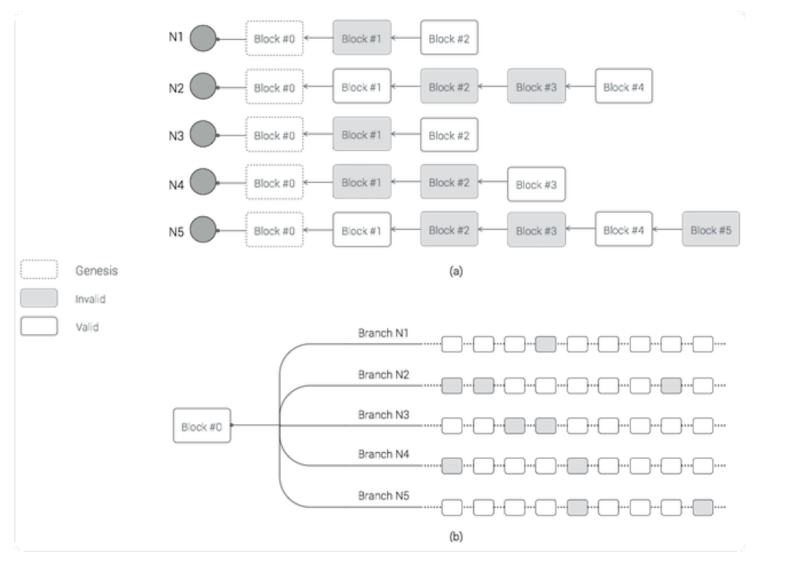
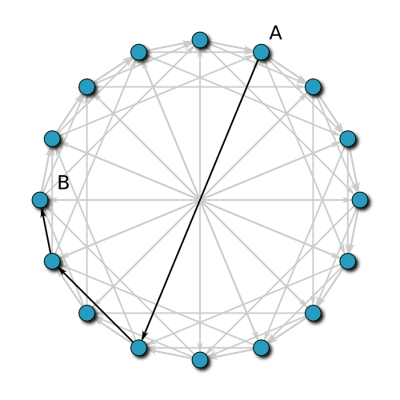
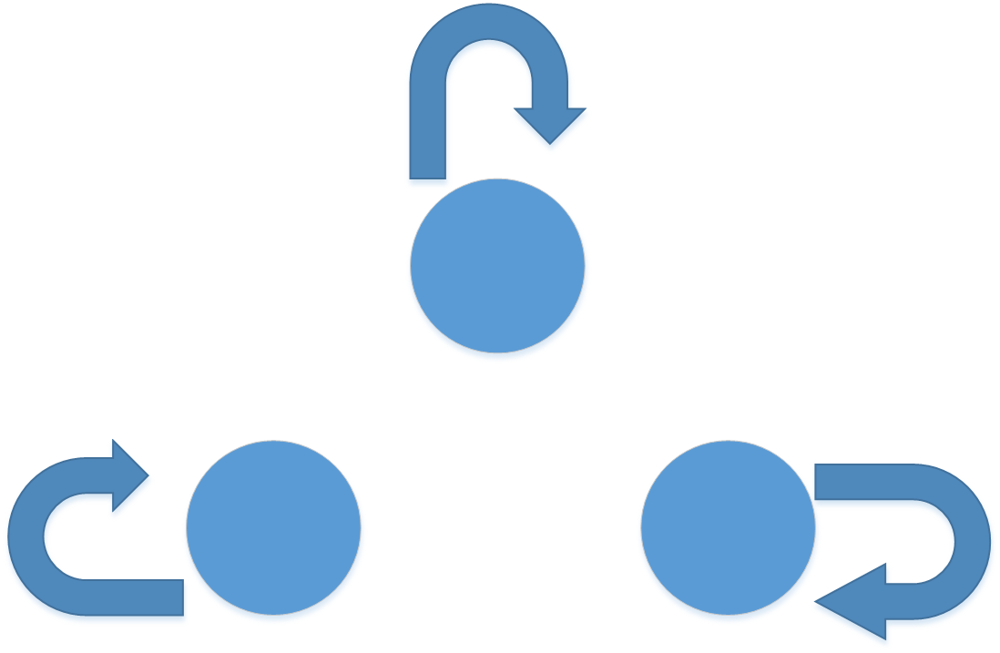
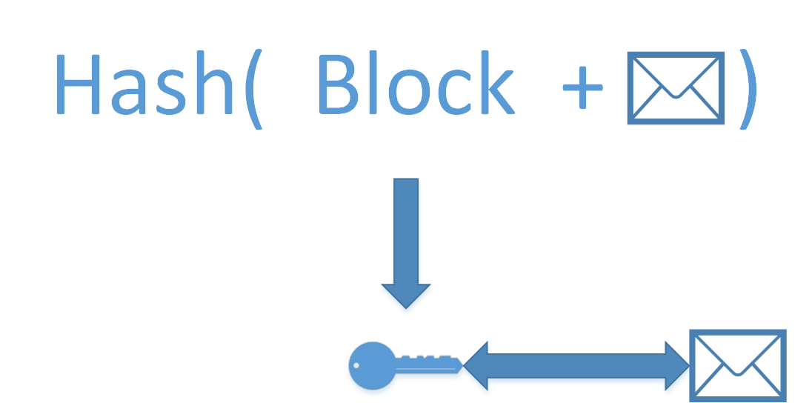
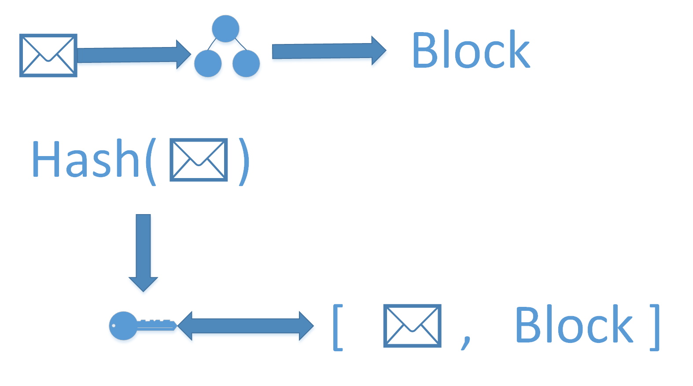
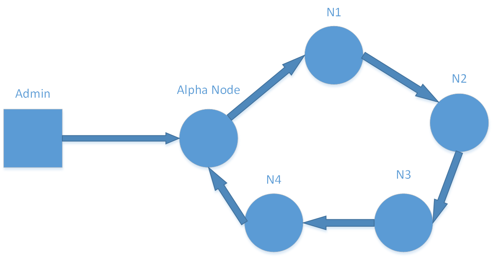
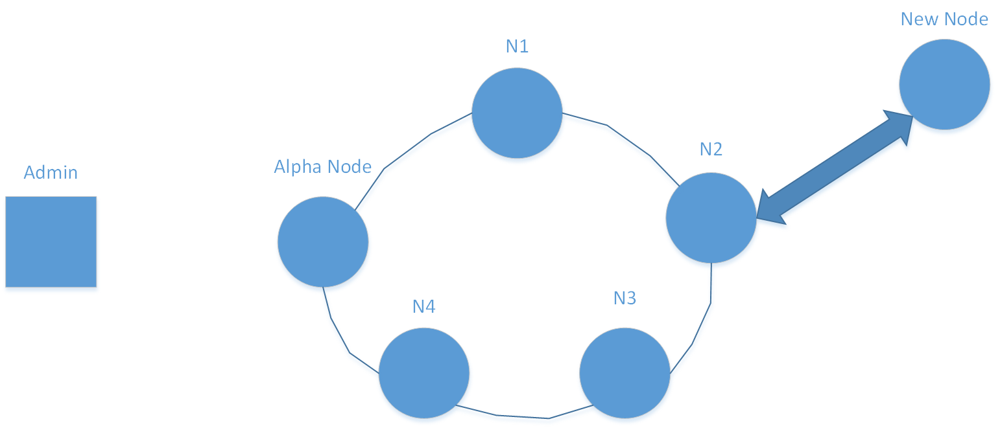
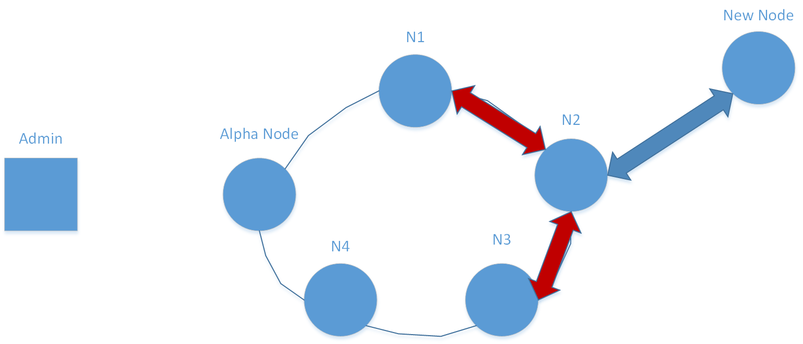

To implement our system, rather than reinvent the wheel we decided to go with an existing, partially-completed open-source blockchain framework called Flowchain. This is a unique blockchain implementation, and we will discuss some of its features before further explaining what we added.
Flowchain seeks to address the problems inherent to crossing blockchain and resource-constrained embedded devices, namely a lack of memory and computational time with which it can manage and validate the chain. It does so by creating a new scheme where each node on the network has its own chain that is continuously being mined, with realtime data transactions that pass through the network being stored in a distributed ledger associated with the blockchain. To cut down on memory usage, only the "most recently used", or MRU, block is kept in the nodes memory.
While this is helpful in terms of conserving resources, it adds a good amount of difficulty related to validation and security. The premise behind decentralized blockchain systems is that if everyone has a copy of the same ledger, going back and modifying past transactions becomes impossible. With Flowchain's block system, each chain itself is private, so the owner may go back and modify past transactions unbeknownst to the other members of the network. This is a problem we discuss several solutions for in the Future Work section.
The "mining" system works as follows:
The communication system of this network uses a chord protocol. Nodes are organized in a ring, where each node has a "finger table" consisting of log(n) entries, where n is the number of nodes in the ntwork. The first entry of the finger table is the "successor" of that node. This allows for lookup of daat in O(log(n)) time. This implementation also requires a lot of back-and-forth messaging for "chord stabilization" where the finger tables are updated and rearranged as nodes enter and leave.
The existing implementation of Chord Protocol had a bug in the stabilization procedure where the finger tables weren't updating correctly, and the proper successors were not being found. This led to the bug where each node was simply pointing to itself as both successor and predecessor. We were able to find and fix this bug to correct the chord implementation.
The previous implementation of blockchain creates a hash from the block has and transaction to make a key which corresponds with the transaction in a database. The problem with this is that the information regarding the transactions aren't stored in the blockchain at all and verification of the blockchain is difficult sine you have to check every block in the chain to find which one correlates with the transaction you are concerned with. In addition, this implementation only keeps the most recently mined block for each node blockchain, so previous blocks aren't recoverable if needed.
The new implementation uses temporary storage of transactions to record what happens in between the mining of the blocks for each node. When a new block is generated, the transactions in that period are hashed into a merkle tree and the root is attached to the new block. Also, the key generated into the database is now just a hash of the transaction ID and each database entry consists of the transactions and their corresponding blocks for easy look up. In addition, each node has access to it's whole blockchain, not just the newest block.
The Flowchain system had no mechanism in place for the authentication of nodes or messges, so we added a publig registry of keys and callbacks for the network to verify signatures upon critical messages. In order to keep the system relatively real-time and low latency, this was not done on minor data transactions. We used the node.js crypto library for our implementation.
Adding AlphaNode was our way of creating aprivate blockchain/network. New member's cannot join the network unless allowed by AlphaNode, which is responsible for distributing information to the network (beta nodes). For example, the Admin sends the key and permissions of a new node that wants to join directly to the AlphaNode, which then signs and distributes this information to all other nodes in the network. Each node starts with inherent knowledge of the AlphaNode public key.
To implement permissioned joining, we modified the chord "Node Join Request" process. new nodes can only be allowed into the network if it was already added to a database as a member. Signing this information and distributing it to other nodes prevents impersonation since the network is able to verify if the data came from AlphaNode or not.
Here, we can see how the node receiving the join request validates if that node is allowed to join. To validate, it checks both predecessor and successor nodes to see if their databases also have the information about the new node requesting to join. If so, the node approves the new node and adds it to its finger table (majority confirmation). To implement this we had to add several new types of chord messages and callback functions within the networking.
Currently, node permissions are distributed by AlphaNode only on join requests or permission update requests. We have not implemented node actions yet, but on creation they could be used for verification that a permission expists for a requested action from a node on critica requests. This functionality would also be useful to use for permission discovery, when we want to find which nodes have a specific permission.